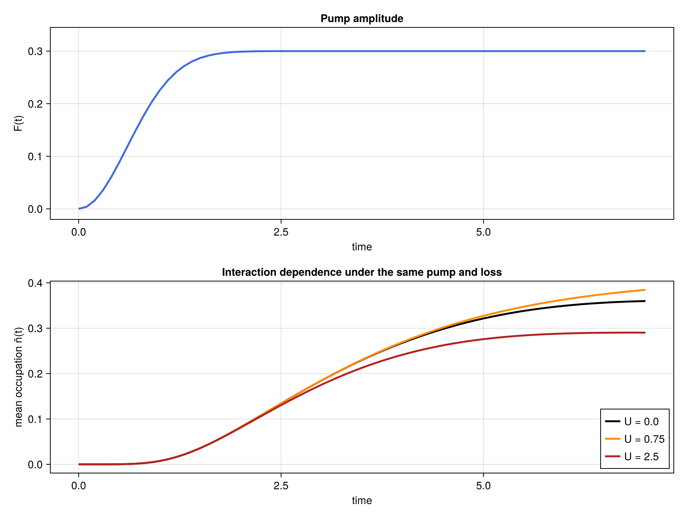

Driven-dissipative Bose–Hubbard dynamics
This example simulates an open bosonic chain with a smoothly switched-on coherent pump and local particle loss. Its main purpose is to show that the same function-based approach used for a time-dependent Hamiltonian extends directly to dissipative dynamics:
- evaluate the physical Hamiltonian at the midpoint of the current interval,
- combine it with the fixed jump operators to construct a Liouvillian MPO,
- evolve the vectorized density matrix with ordinary two-site TDVP.
We compare several onsite interaction strengths while keeping the pump, hopping, and loss fixed. This simple example shows the competing behavior of pumping and particle loss in a bosonic lattice.
Advanced figures for the driven-dissipative Bose–Hubbard scan are generated by scripts/driven_dissipative_bose_hubbard.jl.
Model
In a frame rotating with the coherent pump,
\[H(t) = -J\sum_{j=1}^{N-1} \left( a_j^\dagger a_{j+1} + a_{j+1}^\dagger a_j \right) -\Delta\sum_{j=1}^{N}n_j +\frac{U}{2}\sum_{j=1}^{N}n_j(n_j-1) +F(t)\sum_{j=1}^{N}\left(a_j+a_j^\dagger\right),\]
where $J$ is the hopping strength, $U$ is the onsite interaction, $\Delta$ is the pump detuning, and $F(t)$ is the time-dependent coherent pump amplitude. This model is widely used as a minimal description of driven nonlinear cavity arrays and other interacting bosonic open systems.
The pump term does not add particles incoherently. Instead, it drives a phase-coherent displacement of every bosonic mode. Starting from vacuum, it raises the occupation of the lattice while hopping redistributes particles and the onsite interaction makes multiple occupation increasingly costly.
Local one-particle loss is described by
\[\frac{d\rho}{dt} = -i[H(t),\rho] + \kappa\sum_{j=1}^{N}\mathcal{D}[a_j]\rho .\]
with
\[\mathcal{D}[a_j]\rho = a_j\rho a_j^\dagger - \frac{1}{2}\left(a_j^\dagger a_j \rho + \rho a_j^\dagger a_j\right).\]
Parameters and setup
using Printf
using ITensors
using ProcessTensors
const N = 4
const local_dim = 3
const hopping = 0.5
const detuning = 0.0
const interaction = 0.75
const pump_strength = 0.30
const ramp_time = 0.6
const loss_rate = 0.8
const dt = 0.1
const final_time = 5.0
const maxdim = 60
const cutoff = 1e-10
physical_sites = siteinds("Boson", N; dim=local_dim, conserve_qns=false)
liouville_sites = liouv_sites(physical_sites)
initial_state = MPS(physical_sites, fill("0", N))
initial_density = to_dm(initial_state)
initial_density_liouville =
to_liouville(initial_density; sites=liouville_sites)4-element MPS{Liouville}
site dims: 9, 9, 9, 9
link dims: 1, 1, 1
maxlinkdim: 1
combiners: 4 ITensors
tensors:
[1] ((dim=1|id=348|"Link,l=1"), (dim=9|id=81|"Liouv,Site,n=1,ptype=Boson"))
[2] ((dim=1|id=179|"Link,l=2"), (dim=1|id=348|"Link,l=1"), (dim=9|id=74|"Liouv,Site,n=2,ptype=Boson"))
[3] ((dim=1|id=414|"Link,l=3"), (dim=1|id=179|"Link,l=2"), (dim=9|id=489|"Liouv,Site,n=3,ptype=Boson"))
[4] ((dim=1|id=414|"Link,l=3"), (dim=9|id=194|"Liouv,Site,n=4,ptype=Boson"))
The tuple convention (rate, operator, site) adds rate * D[operator_site] to the Liouvillian. These jump operators remain unchanged while the Hamiltonian is rebuilt in time.
loss_jump_operators = [
(loss_rate, "A", j) for j in 1:N
]4-element Vector{Tuple{Float64, String, Int64}}:
(0.8, "A", 1)
(0.8, "A", 2)
(0.8, "A", 3)
(0.8, "A", 4)We monitor only the mean occupation,
\[\bar n(t) = \frac{1}{N}\sum_{j=1}^{N}\operatorname{Tr}[n_j\rho(t)],\]
to observe the dynamics of the system under driven pumping. Vectorizing the observable lets us evaluate it directly through the Hilbert–Schmidt inner product with the Liouville-space density MPS. (link back to the theory section where this was stated)
mean_occupation_operator = let observable = OpSum()
for j in 1:N
observable += 1 / N, "N", j
end
observable
end
mean_occupation_mpo = MPO(mean_occupation_operator, physical_sites)
mean_occupation_liouville =
to_liouville(mean_occupation_mpo; sites=liouville_sites)
@assert isapprox(real(tr(initial_density)), 1.0; atol=1e-12)Time-dependent Hamiltonian
We use
\[F(t) = F_0\left[ 1-\exp\left(-\frac{t^2}{2\tau^2}\right) \right].\]
The pump begins at zero and smoothly approaches $F_0$. Unlike a pulse that later switches off, this protocol lets the occupation rise and settle under the continued competition between driving and loss. Calling driven_bose_hubbard_hamiltonian(t) returns the OpSum at time t. The interaction uses $n(n-1)=n^2-n$.
pump_amplitude(t::Real) =
pump_strength * (
1 - exp(-(t^2) / (2 * ramp_time^2))
)
function driven_bose_hubbard_hamiltonian(t::Real)
pump = pump_amplitude(t)
H = OpSum()
for j in 1:(N - 1)
H += -hopping, "Adag", j, "A", j + 1
H += -hopping, "A", j, "Adag", j + 1
end
for j in 1:N
H += -detuning, "N", j
H += interaction / 2, "N", j, "N", j
H += -interaction / 2, "N", j
H += pump, "A", j
H += pump, "Adag", j
end
return H
end
H_final_linear =
driven_bose_hubbard_hamiltonian(final_time)
L_final_linear = liouvillian_mpo(
H_final_linear,
liouville_sites;
jump_ops=loss_jump_operators,
)
@assert length(L_final_linear) == NMidpoint Liouville TDVP
The vectorized density matrix obeys
\[\frac{d}{dt}|\rho(t)\rangle\rangle = \mathcal{L}(t)|\rho(t)\rangle\rangle .\]
On each interval $[t_n,t_n+\Delta t]$, we construct
\[\mathcal{L}_{n+\frac12} = \mathcal{L}\left(t_n+\frac{\Delta t}{2}\right)\]
and hold that Liouvillian fixed for one two-site TDVP step. The timestep is the real duration dt because the Hamiltonian factor $-i$ is already included in the Liouvillian.
The complete workflow of this is OpSum → liouvillian_mpo → tdvp for each timestep.
nsteps = round(Int, final_time / dt)
times = collect(range(0.0; step=dt, length=nsteps + 1))
trajectory = let
density = copy(initial_density_liouville)
occupations = Float64[]
trace_errors = Float64[]
bond_dimensions = Int[]
for step in eachindex(times)
density_trace = tr(to_hilbert(density))
push!(
occupations,
real(inner(mean_occupation_liouville, density) / density_trace),
)
push!(trace_errors, abs(density_trace - 1))
push!(bond_dimensions, maxlinkdim(density))
step == length(times) && continue
midpoint = times[step] + dt / 2
L_mid = liouvillian_mpo(
driven_bose_hubbard_hamiltonian(midpoint),
liouville_sites;
jump_ops=loss_jump_operators,
)
density = tdvp(
L_mid,
dt,
density;
time_step=dt,
nsite=2,
maxdim=maxdim,
cutoff=cutoff,
outputlevel=0,
)
end
(
occupations=occupations,
trace_errors=trace_errors,
bond_dimensions=bond_dimensions,
)
end
@assert all(isfinite, trajectory.occupations)
@assert all(
n -> -1e-8 ≤ n ≤ local_dim - 1 + 1e-8,
trajectory.occupations,
)
max_trace_error = maximum(trajectory.trace_errors)
@assert max_trace_error < 1e-2
if max_trace_error > 5e-4
@warn "Trace drift exceeds the soft example tolerance." max_trace_error=max_trace_error
end
println("Driven-dissipative Bose–Hubbard (single U)")
@printf(" U = %.3f, final n̄ = %.6f\n", interaction, trajectory.occupations[end])
@printf(" max trace error = %.3e\n", max_trace_error)
@printf(" max bond dim = %d\n", maximum(trajectory.bond_dimensions))Driven-dissipative Bose–Hubbard (single U)
U = 0.750, final n̄ = 0.188502
max trace error = 3.314e-04
max bond dim = 30
Physical response
The script-generated figure places the common pump turn-on above the mean occupation curves for all three interaction strengths. Becayse every run uses the same drive, hopping, and loss, differences between them isolate the effect of on-site interaction.

Initially, there are no particles in the lattice. As the pump turns on, it raises the particle number, and reaches a constant pump ratefor a brief time-window. However, as the time progresses, local loss prevents unbounded growth, thus plateauing to a constant particle occupation. The on-site interaction strength plays an important role in deciding the final particle occupation. If the interaction strength is too strong, the cost of adding more bosons to a site increases, thus leading to a lower final particle occupation. If there is no interaction, the particle excitations caused by hopping are not in good resonance with the pump. The lossy bosonic system, therefore, has the largest particle occupation at an intermediate interaction strength.